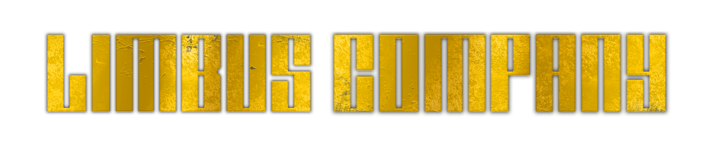
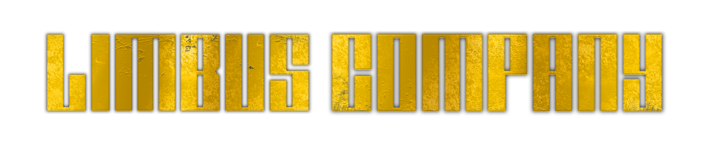
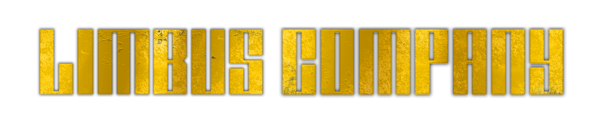
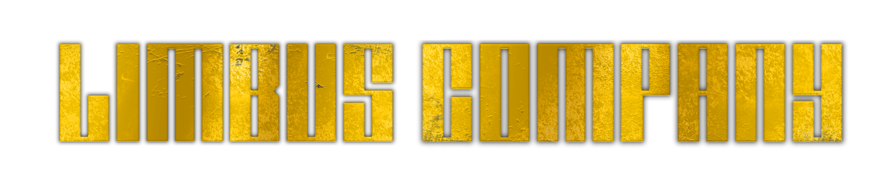

Pecador Número 8: Ishmael
Pode estar desanimado com o estado defeituoso de muitos dos seus pecadores, mas não se preocupe; esta pecadora é uma das poucas que consegue cumprir a maioria das missões sem grandes queixas. É provável que ela faça julgamentos razoáveis, por isso é uma boa ideia começar as conversas enquanto olha para ela se estiver à procura de bons conselhos. No entanto, não se deve esquecer: esta pecadora sobreviveu a uma viagem absurda num corpo de água muito vasto.
A paciência dela pode ser grande, mas quando quebrada, será uma tarefa difícil recuperar a sua confiança.
Ishmael é baseada no protagonista de mesmo nome do livro "Moby Dick" escrito por Herman Melville, O livro se trata sob Ishmael embarcando o navio "Pequod", comandado pelo capitão Ahab, que jura vingança contra o Moby Dick depois que este arrancou uma perna do joelho para baixo e o deixou com uma prótese feita de uma mandíbula de baleia. Durante a jornada, um marinheiro acaba caindo do mastro, e a boia salva vidas é lançada, porém nenhum dos dois retorna ao Pequod. Queequeg, um tatuado canibal, e arpoador cujo pai era rei da ilha fictícia de Rokovoko, acaba sugerindo que seu caixão seja usado como uma boia salva vidas. No final, toda a tripulação (e o barco em si) são devorados por Moby Dick, com Ishmael sendo o único sobrevivente, pois usou o caixão de Queequeg como uma boia salva-vidas, depois de ficar flutuando sob o mar neste caixão por um dia e uma noite, Ishmael é resgatado por Rachel, o qual ainda procura seus marinheiros perdidos.
Ishmael usa duas armas para lutar, tornando-a um pouco diferente dos outros pecadores, ela usa uma maça e um escudo escrito "HEARSE". Ishmael consegue contribuir bem para combate, usando seu escudo para bloquear e dando um contra-ataque com sua maça. Ishmael também é um dos poucos pecadores que são bons em combate e no psicológico, com ela sempre tendo um conselho ou dependendo da situação, uma boa pergunta.